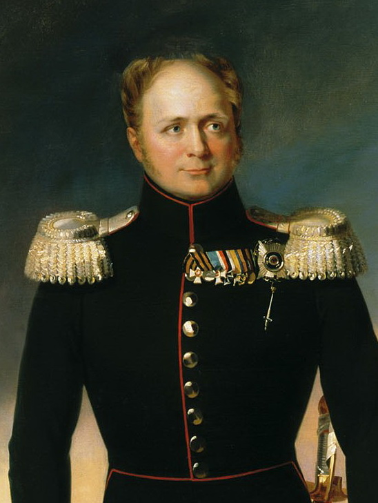

1812년 서막 - 짜르 알렉산드르를 둘러싼 말말말
게시: 2019-06-17T06:30:50+09:00
"폴란드는 아침거리일 뿐이다... 러시아가 저녁을 먹을 곳은 어디일까 ?" - 1772년 제1차 폴란드 분할 이후 당시 영국 의회 의원이었던 에드먼드 버크(Edmund Burke)가 점점 서쪽을 밀고 나오는 러시아에 대해 한 말 "이 꼬마는 자기 모순의 매듭덩어리 같구먼." - 전제 군주 집안에 태어난 왕자로서, 스위스 출신 가정교사에게서 계몽사상으로 교육을 받은 어린 손자 알렉산드르를 보고 예카테리나 대제가 평한 말 "난 무책임한 게으름뱅이이고 진실된 생각과 말, 행동을 할 능력이 없다. 난 이기적 사람인데 그 주된 이유는 허영심 때문이다." - 1789년, 당시 12살이던 알렉산드르가 적은 일기 중에서 "내 계획은 와이프와 함께 라인 강변에 정착하여, 평범한 사람으로서 친구들과 함께 자연 철학을 공부하며 행복을 찾는 것이다." - 1796년 당시 19세이던 왕자 알렉산드르가 친구에게 한 말 "이 황태자가 성당에 들어갈 때보니 자기 할아버지를 살해한 자들이 앞장서서 들어가고, 황태자를 둘러싼 자들은 자기 아버지를 시해한 자들이고, 황태자를 시해할 준비가 된 자들이 그 뒤를 따라 들어가더군요." - 알렉산드르의 비자발적 묵인 하에 아버지 파벨 1세가 암살된 이후 알렉산드르의 대관식에 참석했던 어느 프랑스 망명 귀족의 편지 중에서 "제 아버지를 암살한 귀족들을 처벌하지 않고 여전히 고위직에 두고 있는 러시아 짜르가 이런 비난을 하다니 매우 희한한 일이다." - 1804년 앙기엥(Enghien) 공작을 납치하여 사법살인한 나폴레옹의 행위를 알렉산드르가 맹비난하자 그에 대해 대외적으로 발표한 프랑스 외무부의 반응. 알렉산드르는 괜히 나섰다며 크게 후회했다고 전해짐. "이 전투에서 러시아군보다 짜르 알렉산드르 개인이 훨씬 더 철저히 패배했다." - 1805년 아우스테를리츠 전투 이후 프랑스 외교관 Joseph de Maistre의 편지에서
"완전히 새로운 체제가 현재까지의 체제를 교체해야 합니다. 만약 내가 나폴레옹 황제와 직접 만나 담판 짓는다면 그런 체제에 대해 매우 쉽게 합의에 도달할 것이라고 자신합니다." - 1807년 틸지트(Tilsit) 회담 직전 프랑스 측에 보낸 알렉산드르의 편지 중에서

"내가 보나파르트와 단 둘이서 마주 앉아 하루에 몇 시간씩 대화를 하며 며칠을 보냈다는 것을 상상해보거라. 정말 꿈 같은 일이 아니냐 ?" - 1807년 틸지트 회담 이후 여동생 예카테리나에게 보낸 알렉산드르의 편지 중에서 "폐하, 조심하소서 ! 선황 폐하의 전철을 밟을까 두렵사옵니다." - 틸지트 회담 이후 어느 알렉산드르의 심복 중 하나가 "폐하와의 동맹, 특히 영국과의 전쟁은 이 나라에서의 자연스러운 사고 방식 자체를 완전히 뒤흔들어 놓았습니다. 이건 마치 완전한 개종과 같은 수준의 일입니다." - 틸지트 회담의 결과로 러시아의 영국에 대한 선전포고가 이루어진 뒤 상트 페체르부르그 주재 프랑스 대사가 나폴레옹에게 보낸 편지에서 "러시아군과 프랑스군, 그리고 일부 오스트리아군으로 이루어진 5만의 군대가 콘스탄티노플에서 출발하여 아시아로 출정한다면, 단지 유프라테스 강까지만 진격해도 영국은 벌벌 떨며 대륙의 발 밑에 무릎 꿇을 것입니다." - 1808년 2월 알렉산드르에게 보낸 나폴레옹의 편지 중에서 "이게 바로 틸지트에서 사용되는 언어야 !" - 위의 나폴레옹의 편지를 읽으며 흥분한 알렉산드르가 내뱉은 찬탄 "알렉산드르, 너의 몰락을 스스로 자초해서는 안 된다 ! 백성들의 존경은 잃기는 쉽지만 되찾기는 어렵단다. 그 회의에 참석한다면 넌 그걸 잃을 것이고 결국 제국을 잃고 가족들도 파멸시킬 거란다." - 1808년 9월 나폴레옹이 소집한 에르푸르트 회담에 참석하기 위해 출발하려는 알렉산드르에게 보낸 모후의 편지 "우리가 공공연하게 군비를 확충하고 무장 병력을 과시하거나, 요란하게 나폴레옹를 비난하는 것은 나폴레옹을 몰락시키는데 도움이 되지 않습니다. 그 목표를 위해서는 오로지 심오한 침묵 속에서만 준비를 해야 합니다." - 위의 모후의 편지에 대한 알렉산드르의 답장 "나폴레옹은 내가 그저 바보라고 생각한단다. 하지만 맨 마지막에 웃는 자가 가장 오래 웃는 법이지. (중략) 유럽은 우리 둘이 공존할 수 있을 정도로 넓지 않단다. 둘 중 하나는 조만간 무릎을 꿇어야 할 거야." - 위의 편지와 함께 따로 여동생 예카테리나에게 보낸 알렉산드르의 답장
"두 황제는 서로의 조치에 대해 비교적 만족한 상태로 헤어졌다. 그러나 기저에는 서로에 대한 불만이 쌓여있었다."
- 에르푸르트 조약 직후 러시아 주재 프랑스 대사 콜랭쿠르의 관측 "유럽을 구원할 수 있는 것은 오로지 폐하 뿐입니다. 폐하께서 그러실 수 있는 유일한 방법은 나폴레옹에게 반기를 드시는 것입니다." - 에르푸르트 조약 기간 중 알렉산드르와 몰래 접촉한 프랑스 전직 외무장관 탈레랑이 알렉산드르에게 한 말
Source : 1812 Napoleon's Fatal March on Moscow by Adam Zamoyski